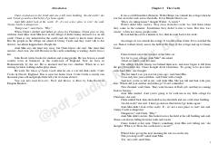

TGKler qishloqdagi sirli qasrning dahshatli sirlarini ochishga urinadi.
Kler ismli qiz Rojdestvo ta'tilini xolasi Minning qishlog'ida o'tkazish uchun keladi. U yaqin atrofdagi sirli Genny qasri haqida ko'proq ma'lumot olishga intiladi, ammo qishloq aholisi bu joydan qo'rqib, u haqida gapirishni istashmaydi. Kler qasrning sirini ochishga qaror qiladi va u yerda uni nimadir kutayotganini sezadi.